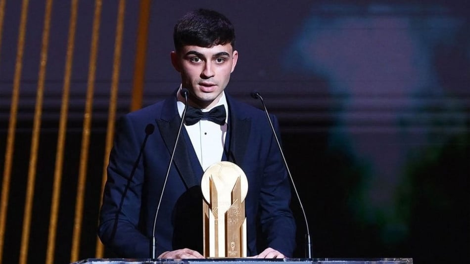
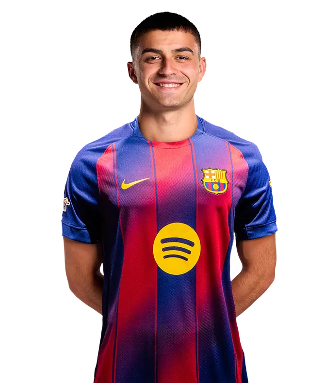
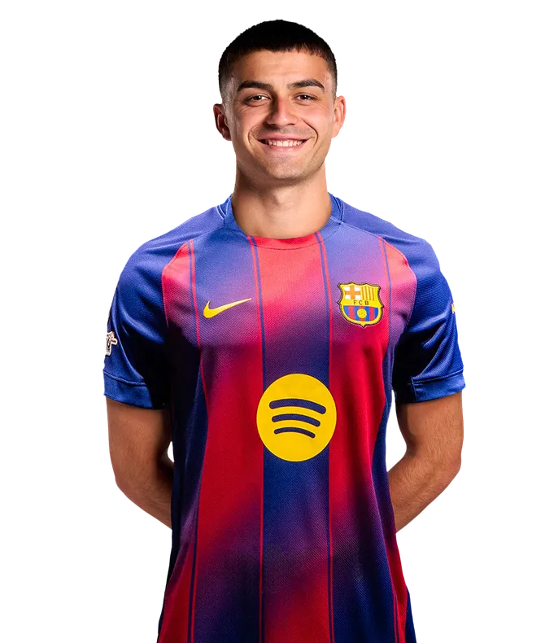

Qui est Pedri ?
De son vrai nom Pedro González López, surnommé Pedri, est un footballeur espagnol évoluant au FC Barcelone. Né à Tegueste (îles Canaries), il s’est imposé comme l’un des plus grands talents du football espagnol grâce à sa vision de jeu et sa technique exceptionnelle.Plus de detailssur ça vie et sont histoires
Carrière
Pedri débute sa carrière professionnelle à Las Palmas en 2019, où il impressionne par sa maturité et son intelligence de jeu. Rapidement recruté par le FC Barcelone, il s’impose dès sa première saison (2020-2021) comme titulaire, enchaînant les matchs avec un calme remarquable pour son âge.
La même année, il participe à l’Euro 2020 avec l’Espagne et aux Jeux Olympiques de Tokyo, devenant une pièce maîtresse de la Roja. Il remporte le Trophée Kopa du meilleur jeune joueur du monde en 2021. plus de detail sur la carriere de Pedri
 

Palmares

Malgré sont jeunes age pedri a deja une carriere tres complete avec un bon nombre de trophées.Liste et photo du palmaresde Pedri
Actualité
Après plusieurs blessures, Pedri revient progressivement à son meilleur niveau au FC Barcelone. Sous les ordres de Hansi Flick, il retrouve son influence au milieu de terrain et continue d’être un joueur clé de l’équipe d’Espagne.
En dehors du terrain, Pedri reste discret et concentré sur sa progression, incarnant les valeurs de travail et d’humilité du football espagnol moderne.